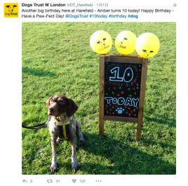
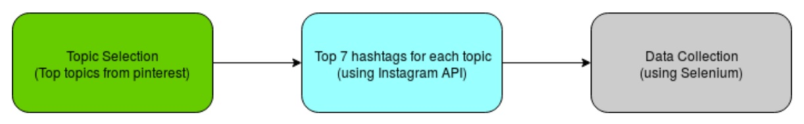
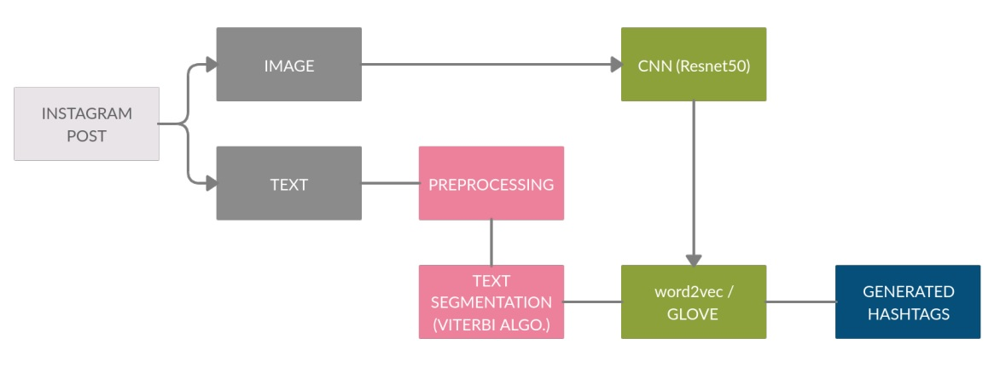
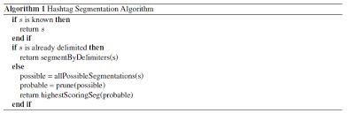
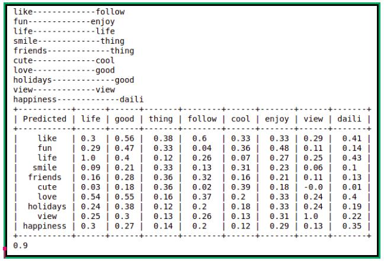
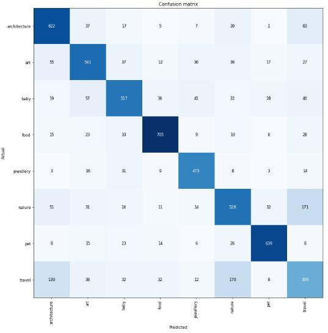
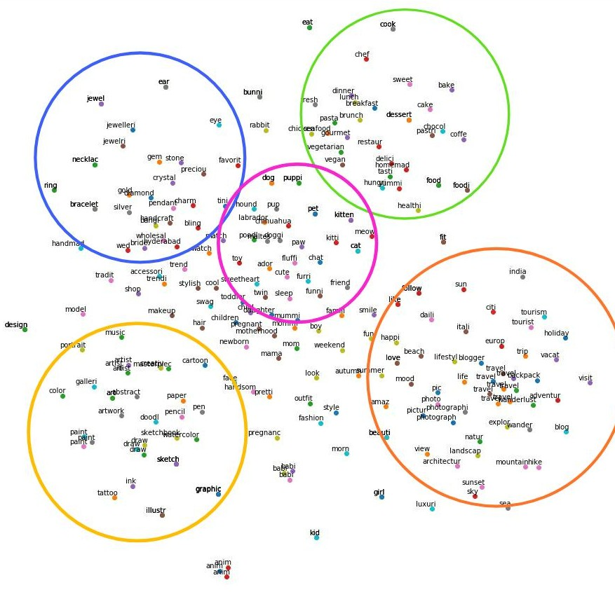

(Abhishek Mathur, Shashank Srikant, Anant Agrawal and Vatsal Soni)
Abstract
The goal of this project is to generate hashtags given a multi-modal post on OSM (Online Social
Media) like Instagram that may contain both images and text content. The user might also provide
a set of few seed hashtags as input and the generated hashtags should be relevant to these hashtags
as well. In the Figure 1, we are given an image, text content and certain hashtags (#dog, #birthday)
as the inputs 1 . Our proposed method needs to utilize this data and suggest few other hashtags
like #celebration, #party or #puppy for the same post. The project thus requires us to leverage
the latest methods in computer vision such as Convolutional Neural Networks (Resnet50, Transfer
learning) and in NLP such as glove embeddings, and word2vec to get a high precision/recall on the
given task. We propose a two level hierarchical system where the predictions made by an image
classifier are subsequently used by the corresponding text based approach. Our proposed approach
shows significantly better results than the proposed baselines. To foster further research and to
encourage reproducibility we release all our code and dataset respectively in our project page.

Figure 1: Predicting the correct hashtag: #dog is difficult without the image
Related Work
The task of hashtag generation has been studied a lot in the past. One set of approaches use only
the text data to predict relevant hashtags. Most of these approaches model
the problem as either a classification or ranking task. Another set of approaches involve the use
of topic modelling based methods such as LDA to generate relevant hashtags. LDA is often used to
model the underlying topic assignment of language classified tweets. The LDA
based models are improved by using a novel tweet pooling methods. However, none of these methods make use of multimodal data such as both images and text for the task of hashtag recommendation / generation
which is what we aim to solve.
There also exist works which predict the hastags using the images only. Zero-shot learning is sometimes used along with a novel loss function to predict the hashtags for a given image.
On the other hand, a scene model is often used and an object model trained on the MIT Places dataset
and Imagenet dataset respectively to predict multiple hashtags for a given image. They use a binary
cross entropy loss to train their problem in the multi-label setting. None of these approaches utilize
multimodal data and as the problem is posed as a classification task, these approaches are not
capable of generating new hashtags that are not a label in the dataset.
Recently, a few approaches have also been proposed that use multimodal data for image
captioning and hashtag recommendation. A novel co-attention mechanism is used to first
predict relevant hashtags and then generate personalized recommendations. A few other approaches also deal with the task of hashtag generation / recommendation using
multimodal data. However, unlike these methods, our approach is trained on a few specific topics
of Instagram posts and is capable of generating a diverse set of relevant hashtags.
Dataset details
A few datasets such as YFCC100M and HARRISON dataset deal with the task of hashtag
generation using images. However, these datasets do not provide us with text data that is required
for the training of our multimodal system. A few other datasets such as deal with the task of
personalized image captioning given text and image data along with prior user posts.
Thus, we collect our own dataset for the given task by scraping posts from Instagram using
Selenium as the official Instagram API has rate limits. Our dataset consists of hashtags collected
from a diverse set of few topics mentioned below:

Figure 2: A brief description of our data collection pipeline
Pets
Art
Jewellery
Food
Architecture
Babies
Nature
Travel
For the purposes of training and evaluating
our model, we split our data into a train, validation and test set with 70%, 15% and 15% of the
data respectively.
Figure 3, shows the architecture of the model proposed by us. For a given Instagram post, we
first separate out the images and text data. The image data is then pre-processed and passed on
to an image classifier, which is basically a CNN such as Resnet50. The classifier is used to
predict the topic corresponding to each image which is then passed on to our text based model for
further processing. We simultaneously apply some pre-processing on the text as such as stemming
and lemmatization to use it for further downstream tasks. In order to segment the given hastags
into multiple hashtags, we utilize the Viterbi algorithm and this improves the accuracy of our
approach significantly. Our text based approach consists of 8 word embeddings trained on the 8
topics mentioned earlier respectively. The pre-processed text data along with the topic predicted
by the image classifier is then used to find the 10 most relevant hashtags for the given post based
on a cosine similarity metric. We describe in detail the methodology for each task below.

Figure 3: Proposed architecture description
Image Classifier
We train an image classifier such as Resnet-50 and Resnet-34 for the task of image classification.
We model our problem as a multi-label classification problem and leverage transfer learning to
finetune the model on our dataset. We train all our models using PyTorch and utilize the negative
cross entropy loss for training. The optimizer used for training is the Adam optimizer with an
initial learning rate of 0.01. We also leverage certain other approaches such as early stopping and
cosine annealing along with data augmentations to improve the accuracy of the model. Our task is
slightly ill posed as the labels provided for training is not annotated by humans. Rather, the labels
are based on the topics provided by the user for an Instagram posts and are bound to have several
mis-classifications.
Text Classifier
Pre-processing & Hashtag Segmentation

Figure 4: Hashtag segmentation algorithm
As a part of pre-processing, we have converted the input text into lower case and then removed
special characters, emojis and other non-english words. There can be multiple words present in the
input sentence without space (formed as one word) so, we have used segmentation to extract the
words from a single word that can help us predicting hashtags.
Hashtags are complex structures with multiple words combined into single words. (eg : #pi-
coftheday). For training purposes, we segment such complex hashtags into multiple words using the
‘Viterbi algorithm’ to find the most likely sequence of hidden states. An example is “foodnature” =
[ “food”, “nature”]. We also apply stemming after hashtag segmentation as further pre-processing.
The Viterbi algorithm used by us has been shown in Figure 4 above.
Training
We have trained a word embedding approach like Word2Vec [3] and Glove embeddings [5] on our
corpus and used distance measures such as cosine similarity to get the most relevant hashtags. As
one of the baselines, we also aim to implement a simple topic modelling based approach (LDA) for
the task of hashtag generation. The approach is detailed below.
A sample post representing the typical posts on Instagram has been shown in Figure 5.
Figure 5: Shows lack of sufficient text
Typically a post consists of the following:
A photo
A caption of 2-3 lines
A bunch of hashtags
From above it is clear that the amount of text present is very less and therefore using only
the text for training our model won’t be enough. We tackle the above problem using below 2
approaches:
Assuming the hashtags that appear together are semantically related to each other we can also
convert them to text and include them in our training corpus. Using the above assumption
we prepare our corpus by first preprocessing (removing non-english texts, emoticons, etc.)
and then training two different models on the prepared corpus.
Word2Vec: Using 30 epochs and window size of 5 we trained the model to create 300
dimensional word embeddings.
GloVe: Using 30 epochs for training we trained the model to create 300 dimensional
word embeddings.
To better capture the semantic relationship between words we use pre-trained word embed-
dings for a corpus size of 400K words trained on wikipedia data. We train our word2Vec
model with our corpus on top of it which helps to capture the context of the instagram
corpus. Therefore our vocabulary is able to cover more words and is able to capture both
the generic and insta-specific meaning of a word.
Based on the above mentioned points, we propose three main methods of training as specified
below:
Topic based Glove Model:- We have used glove embedding to find similarity between
words. Here for each topic, we have one model that is trained on its corresponding topic’s
corpus.
Topic based Word2vec Model:- We have used word2vec embedding to find similarity
between words. Here for each topic we have one model that is trained on corresponding
topic’s corpus plus pre trained wikipedia glove embedding.
Global word embeddings:- We have trained one global model irrespective of topic that is
trained on complete corpus plus pre trained wikipedia glove embedding.
Evaluation Mechanism
Evaluation mechanisms like precision and recall (with exact keyword match) cannot be used for the
problem of hashtag prediction because even though the predicted hashtag might be contextually
similar to the ground truth hashtag but the above mechanisms will label it as misclassification.
Therefore for our problem we use a ‘Similarity Confusion Matrix’ for finding the accuracy (based
on K-means clustering algorithm).
For each post, we keep predicted hashtags as rows and ground truth hashtags as the columns
and then calculate the cosine similarity for each pair. For each predicted hashtag (row), we consider
the ground truth hashtag (column) which has the maximum cosine similarity with our predicted
hashtag. If the cosine similarity score corresponding to this maximum value is above a certain
threshold (0.5), then it is considered to be a correctly predicted hashtag 3 . We perform the above
for all of our predicted hashtags (10) and compute the number of correctly predicted hashtags out
of 10. This provides us the accuracy of our predictions for each post.
For each ground truth hashtag (column) we take the maximum row and claim that the predicted
hashtag corresponding to that row is the closest (or most appropriate) to the original hashtag. And
if the similarity metric is above a certain threshold, it is considered as correctly predicted. A brief
example of the computation of our metric for a given post is provided in Figure 6.

Figure 6: A sample image showing the computation of our metric for a given post. Here, the
columns are the ground truth hashtags and the rows are the hashtags predicted by us. As the
similarity between the ground truth hashtags and our predicted hashtags is more than 0.5 for 9 out
of 10 hashtags, the accuracy for this post is 0.9
For the image classifier, we simply use accuracy as a metric to evaluate the performance of our
approach. We do not use any other metric such as F1 score or precision and recall as our dataset is
pretty balanced with equal number of images for each category.
We propose 2 baselines and evaluate our approach against them and an oracle model:
Top K Baseline:- For each post, we first predict the topic based on the image or using the
ground truth itself and return the top 10 hashtags for this topic
Global word2vec:- We train a single text model on the whole corpuse and then predict the
top 10 most similar words based on the sentence embeddings. This baseline does not use any
image data or topic specific corpus
Pretrained Wikipedia word2vec embeddings:- In this model, we use word embeddings
pretrained model on a Wikipedia corpus and finetune on our dataset. This is another form of
global embedding approach.
Topic based word2vec & Glove embeddings:- We train 8 separate glove and word2vec
embeddings on the corpus for each topic. During test time, we first predict the topic for a
post using the image classifier and then predict hashtags using the particular topic specific
word embeddings.
Oracle:- Similar to the above approach but we assume access to the ground truth topics for
a given post.
Results
Table 2 shows the performance of our image classifier on the given dataset. The resnet-50 model
performs the best followed by the resnet-34 model. The model clearly performs well on our semi-
labelled dataset and gets an accuracy of upto 73%. This is a pretty decent accuracy for the given
data as a single image might actually belong to multiple classes as well.
Model
Accuracy
resnet-34
71.2
resnet-50
72.8
Table 2: Image classifier results
Table 3 shows the performance of our approach with respect to the baselines and the oracle
approach. We also evaluate the importance of our hashtag segmentation step by computing the
accuracy with and without the hashtag segmentation as shown in Table 4.
Model
Accuracy
Top K Baseline
41.829%
Word2Vec + Wikipedia glove embeddings
87.558%
Global model (Word2Vec)
63.040%
Global model (Glove)
74.18%
Our approach (Glove with topics)
96.172%
Oracle
96.525%
Table 4: Ablation study on the importance of hashtag segmentation
From the above tables, we can see that the image classifier performs well for the given dataset. We
also create a confusion matrix to find the topics in which the classifier gets confused the most as
shown in Figure 7(a). We find that the model confuses between certain classes a bit more such as
travel and architecture, travel and nature and so on. We believe that modelling our problem as
a multi-label task instead of a simple multi-class & single label task would improve the accuracy
further. We can also notice that the word embeddings have semantics associated with them. On
applying LDA on the word embeddings followed by TSNE, we can see that the hashtags related to
a given topic get clustered together as can be seen in Figure 7(b).

Figure 7(a): Confusion matrix of image classifier,

Figure 7(b): Clustering of word embeddings
From the results of Table 4, we can see that the use of segmentation in our approach improves
the accuracy of our model significantly. This shows that, there exists several hashtags in our dataset
which contain two or more sub-hashtags which provide more context when segmented out.
We also show the sample hashtags predicted by our approach for a given post in Figure 8.
From this image, we can see that the hashtags predicted by our model are very relevant and are
semantically related. Thus, the model can be deployed to predict Instagram hashtags in the wild.
From the Table 3, we can also see that the use of predictions made by the image classifier instead
of the ground truth (oracle) does not significantly reduce the performance of our approach. This
implies that our image classifier performs pretty decently.
We propose a hierarchical approach to predict hashtags for a multi-modal data such as Instagram
posts. We collect over 60,000 posts and train an image and text based approach for the same.
We propose a new metric for computing the relevance of the predicted hashtags and provide an
algorithm to compute the same. We then evaluate our model against some baselines as well as an oracle approach and show that the approach performs significantly better than the baselines and
only slightly worse than the oracle.
References
Cesc Chunseong Park, Byeongchang Kim, and Gunhee Kim. Attend to you: Personalized image
captioning with context sequence memory networks. In Proceedings of the IEEE Conference
on Computer Vision and Pattern Recognition, pages 895–903, 2017.
Emily Denton, Jason Weston, Manohar Paluri, Lubomir Bourdev, and Rob Fergus. User con-
ditional hashtag prediction for images. In Proceedings of the 21th ACM SIGKDD international
conference on knowledge discovery and data mining, pages 1731–1740. ACM, 2015.
Shivam Gaur. Generation of a short narrative caption for an image using the suggested hashtag.
In 2019 IEEE 35th International Conference on Data Engineering Workshops (ICDEW), pages
331–337. IEEE, 2019.
Fréderic Godin, Viktor Slavkovikj, Wesley De Neve, Benjamin Schrauwen, and Rik Van de
Walle. Using topic models for twitter hashtag recommendation. In Proceedings of the 22nd
International Conference on World Wide Web, pages 593–596. ACM, 2013.
Kaiming He, Xiangyu Zhang, Shaoqing Ren, and Jian Sun. Deep residual learning for image
recognition. In Proceedings of the IEEE conference on computer vision and pattern recognition,
pages 770–778, 2016.
Zongyang Ma, Aixin Sun, Quan Yuan, and Gao Cong. Tagging your tweets: A probabilistic
modeling of hashtag annotation in twitter. In Proceedings of the 23rd ACM International
Conference on Conference on Information and Knowledge Management, pages 999–1008. ACM,
2014.
Rishabh Mehrotra, Scott Sanner, Wray Buntine, and Lexing Xie. Improving lda topic models
for microblogs via tweet pooling and automatic labeling. In Proceedings of the 36th international
ACM SIGIR conference on Research and development in information retrieval, pages 889–892.
ACM, 2013.
Tomas Mikolov, Kai Chen, Greg Corrado, and Jeffrey Dean. Efficient estimation of word
representations in vector space. arXiv preprint arXiv:1301.3781, 2013.
Eriko Otsuka, Scott A Wallace, and David Chiu. A hashtag recommendation system for twitter
data streams. Computational social networks, 3(1):3, 2016.
Shreyash Pandey and Abhijeet Phatak. Cs229 project report.
Cesc Chunseong Park, Byeongchang Kim, and Gunhee Kim. Towards personalized image
captioning via multimodal memory networks. IEEE transactions on pattern analysis and
machine intelligence, 41(4):999–1012, 2018.
Minseok Park, Hanxiang Li, and Junmo Kim. Harrison: A benchmark on hashtag recommen-
dation for real-world images in social networks, 2016.
Jeffrey Pennington, Richard Socher, and Christopher Manning. Glove: Global vectors for word
representation. In Proceedings of the 2014 conference on empirical methods in natural language
processing (EMNLP), pages 1532–1543, 2014.
Bart Thomee, David A Shamma, Gerald Friedland, Benjamin Elizalde, Karl Ni, Douglas
Poland, Damian Borth, and Li-Jia Li. Yfcc100m: The new data in multimedia research. arXiv
preprint arXiv:1503.01817, 2015.
Yue Wang, Jing Li, Irwin King, Michael R Lyu, and Shuming Shi. Microblog hashtag generation
via encoding conversation contexts. arXiv preprint arXiv:1905.07584, 2019.
Qi Zhang, Jiawen Wang, Haoran Huang, Xuanjing Huang, and Yeyun Gong. Hashtag recom-
mendation for multimodal microblog using co-attention network. In IJCAI, pages 3420–3426,
2017